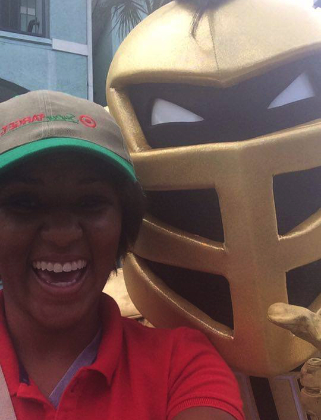
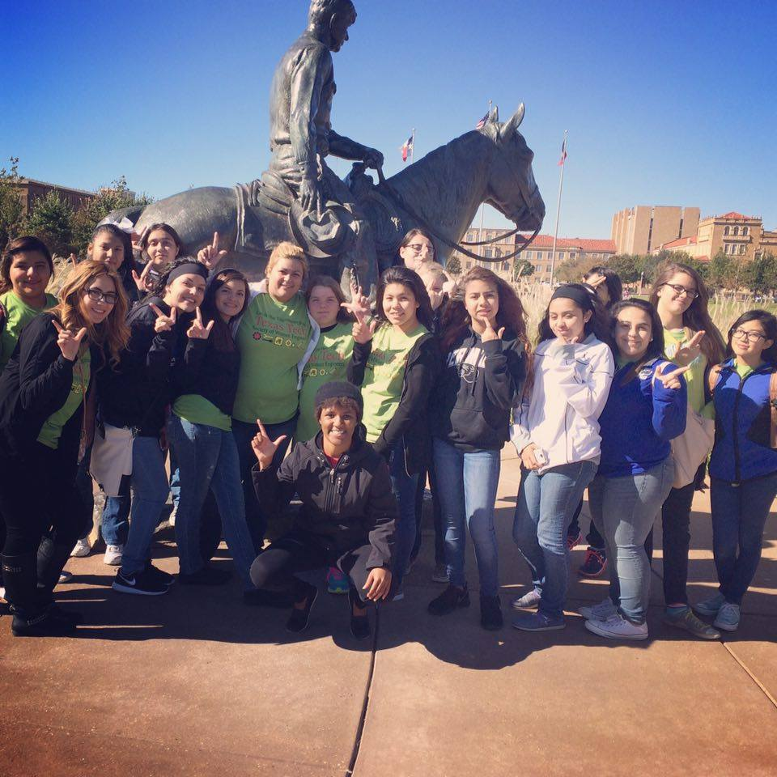
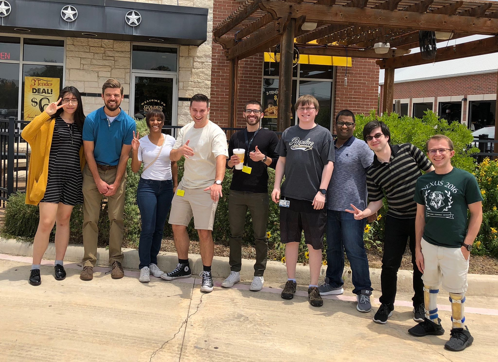

Work/Volunteer Experience
  Work Experience
USAA
Software Developer & Integrator III
USAA
Information Technology Intern, Web Content Management
IT Help Central - IT Division, Texas Tech University
Student Analyst
Target
Sales Associate
Mevesi
Support Specialist
UCF Recreation & Wellness Center
Referee/linesman
As a Software Developer & Integrator, I participate and engage in all phases of USAA's software development life cycle. I have a wide range of responsibilities that include designing, developing, documenting, testing, and debugging new and existing software systems. My primary role consists of front-end web development using Javascript, HTML/CSS, React, Redux, and other development and build tools such as docker and gradle. I also work with RESTful APIs written in Java, and have completed an intensive platform API training.
As an intern, I worked on a team to convert an internal web-application to a new framework. In addition to converting the old code, we also incorporated new custom enhancements to the application while correcting errors listed in the backlog. During the duration of the internship, we utilized the SCRUM methodology to practice and implement agile development strategies and increase productivity.
Under Classroom Technology Services, I provided immediate phone and onsite support to anyone who required technological assistance with equipment in general purpose classrooms. I also routinely analyzed and updated equipment to ensure that all the hardware and software remained up to date with proper functionality.
As a target sales associate, I worked in the food/meat department and as a cashier. At Target, I was able to aquire exceptional customer service skills and improve my ability to work under constant pressure.
Mevesi is a start up company that uses a web-based application to analyzes data for pharmaceutical companies. As a support specialist for a start up, I had a broad range of responsibilities. Whenever a new feature was added, I ran tests to ensure they functioned properly. I assisted the project manager with the design and layout of custom accounts, and I wrote out the requirements for the developers. I revised the entire user manual, and created original help content that described the functionality of each page. I also was incharge of regulating Mevesi Community- a forum through which we provided customers with support and received their feedback.
Being a referee/linesman for UCF's itramural sports helped develop my conflict resolution and de-escalation skills. I also learned how to think and react quickly and to prepare for unexpected situations.
Volunteer Experience
Catch the Engineering Bug
Group Leader
STEMapalooza
Science Loop Instructor
Innovation Worship Team
Background Singer
Catch the Engineering Bug is an all day event hosted by the Society of Women Engineers at Texas Tech University that promotes engineering majors among elementary and middle school students. As a group leader, I guided a group of about 20 eighth graders for the duration of the event. I was able to mentor them in between workshops by answering any questions they had about engineering, preparing for high school, and preparing for college.
STEMapalooza is an all day event hosted by the Boy Scouts of America that promotes STEM education. For the duration of the event, I facilited and instructed the Science Loop. I taught 5 different groups ranging from 20-40 students each the scientific method, and conducted two experiments with each group where they had to think critically to apply the scientific method they just learned.
I was a background singer/ worshiper for Innovation Church's Worship team. I would attend regular rehearsals, sound checks, and perform at both church services each week.